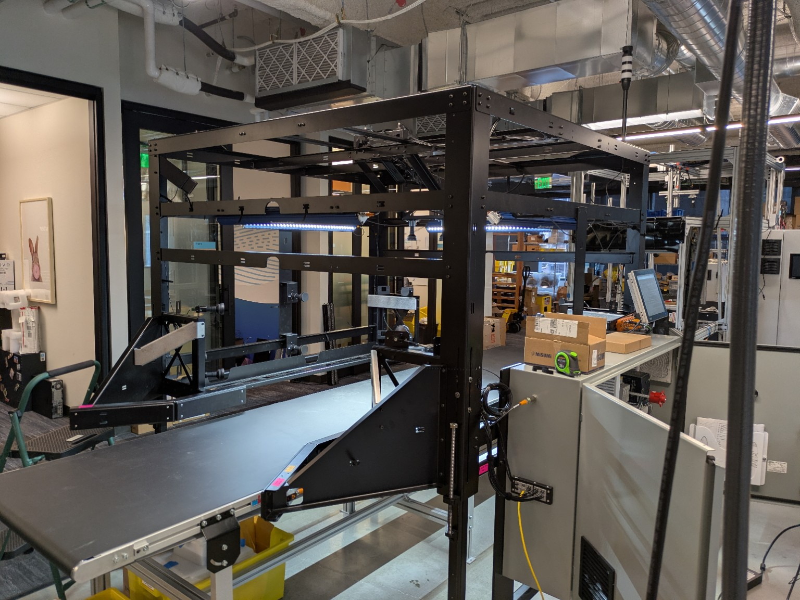
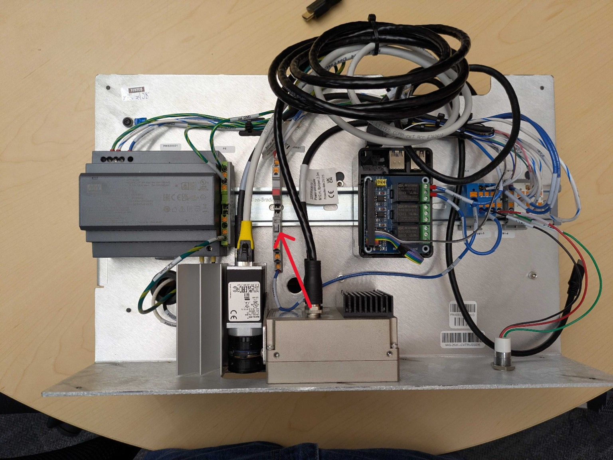
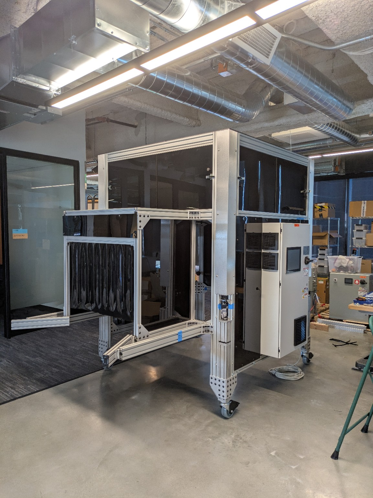
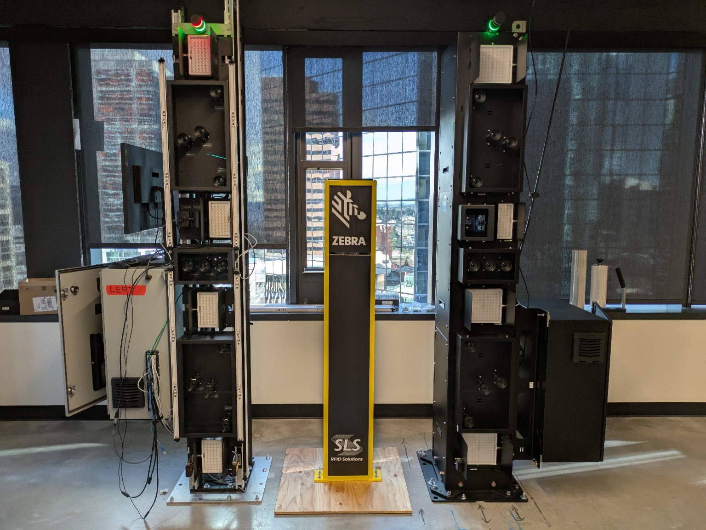
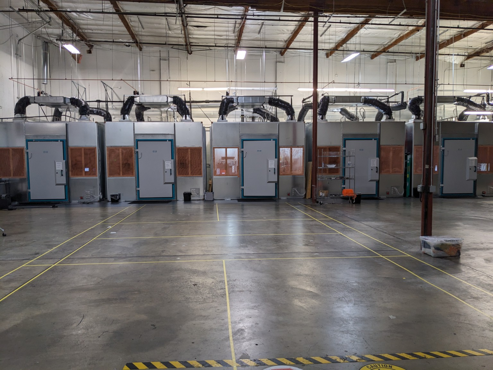
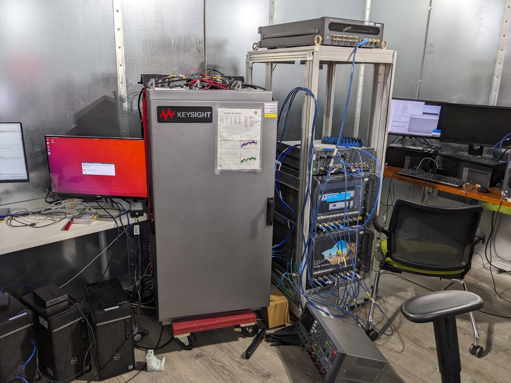
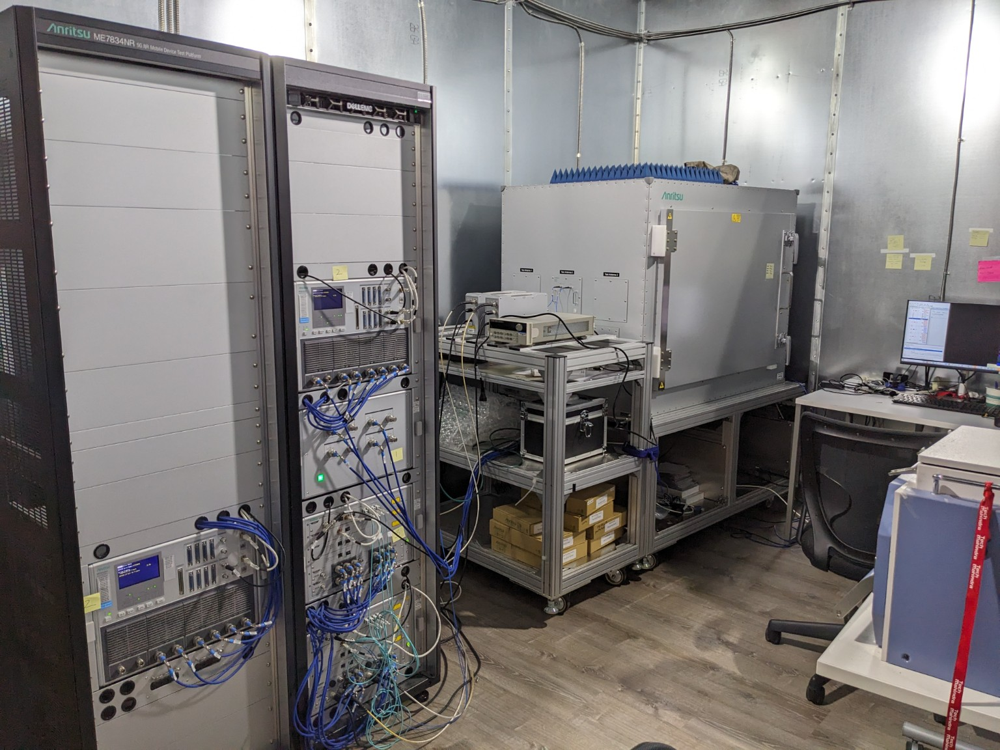
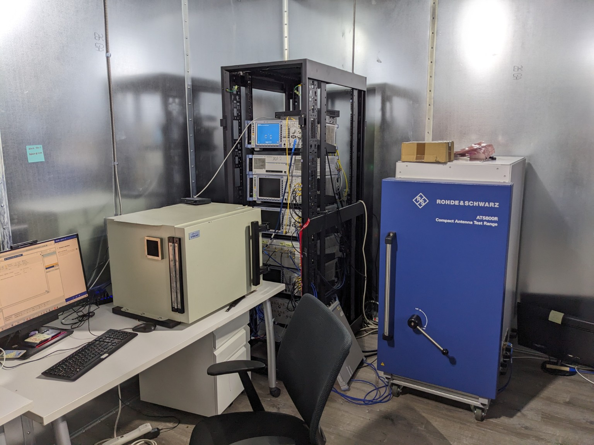

5G Systems | Diagnostics | Embedded & Lab Engineering
Hands-on systems engineer focused on understanding how connectivity behaves end-to-end. My work spans 5G diagnostics, automotive systems, lab infrastructure, and building tools that expose real system behavior.
Bureau Veritas – PM / Test Engineer
Worked as both Project Manager and Test Engineer supporting wireless validation and certification efforts. Experience included V2X, Thread, CTIA testing, and extensive field trials requiring travel and real-world validation.
Built on similar testing foundations as Tech Mahindra, but with additional focus on execution, coordination, and ensuring test coverage across both lab and field environments.
Volkswagen – Engine Assembly / Automation Exposure
While in college, worked in engine assembly and supported the startup and design of robotic carriage systems used for engine block movement and production flow.
This early experience gave me exposure to large-scale automation, robotics integration, and how mechanical and control systems come together in production environments.
I split out the Amazon and Tech Mahindra work into their own pages so each project area can be discussed a little more clearly.
Physical systems, fixtures, panel work, RFID, and validation infrastructure.
Open Amazon page →5G validation, RF lab environments, cross-layer diagnostics, and RLC consistency work.
Open TechM page →Case 1 – Carrier Aggregation / MCS Instability
Signal: Rapid MCS fluctuation on the secondary cell while the primary cell remained stable.
Finding: PHY instability was isolated to the secondary carrier rather than a full link collapse.
Root Cause: RF degradation on the secondary path caused by how the combiners were being applied for the UE.
Case 2 – Data Failure During Call / Inter-RAT Handover
Signal: RF conditions remained healthy, but data failed to resume during a call while moving through 5G to LTE handover.
Finding: The radio link itself did not present as the primary issue, which pointed the investigation toward mobility and higher-layer data behavior.
Root Cause: During Inter-RAT handover with an active call, TCP session handling fell out of sync and the data PDU activation path did not recover correctly, leaving data stalled until the call ended.
Most real issues are not isolated to one layer. I use this flow to understand where the behavior starts, where it propagates, and where the user actually feels it.
Example Python application I built to measure real-world latency from a digital output trigger to a physical light response using an IPC and a Phidgets LUX sensor.
Core Idea: Trigger (GPIO) → detect light change → compute latency
Stack: Python, Tkinter UI, Matplotlib, GPIO, Phidgets API
Focus: Real-time measurement, logging, visualization, and system validation
What it does:
Snippet (trigger → detection logic):
# Detect latency after trigger
latency_ms, light_ns, base, thr, peak = detect_latency_on_trigger(self.lux, trig_ns)
if latency_ms is not None:
log_row(self.seq, "network", trig_ns, light_ns, latency_ms, None, None, None, 1)
At Amazon, a lot of my work centered on taking an idea from paper or concept and turning it into something physical, testable, and maintainable. That included fixture builds, conveyor and frame systems, panel work, wiring, sensors, and broader lab support.




Scope: Fixtures, control panels, RFID systems, validation rigs
Role: Design, build, integration, troubleshooting
Value: Reduced cost, improved lab efficiency, better system visibility
The common thread in this work was that I was not just supporting a test environment, I was helping build the environment itself. A lot of it was hands-on and practical, making sure systems actually functioned end-to-end and were maintainable for the people using them.
Worked as a 5G SME supporting lab and field testing using Keysight, Anritsu, and R&S systems. Focused on debugging, validation, and cross-layer issue analysis across RF, mobility, RLC consistency, and higher-layer data behavior.




Platforms: Keysight, Anritsu, R&S
Focus: RF debugging, mobility, RLC consistency, transport behavior
Value: Faster root cause isolation across lab and field environments
Additional focus: RLC consistency testing
Supported validation around RLC behavior and consistency during changing radio conditions, helping identify when issues were moving beyond RF and starting to affect reliable data flow.